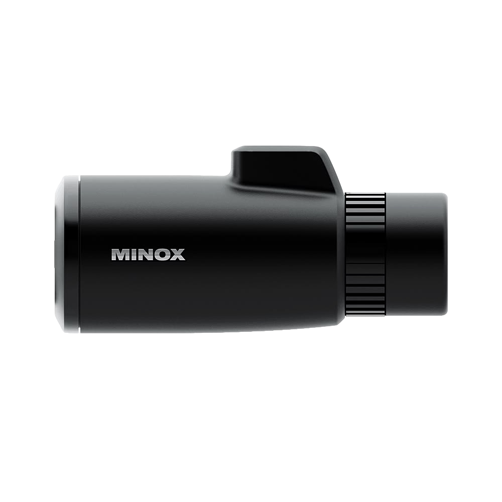
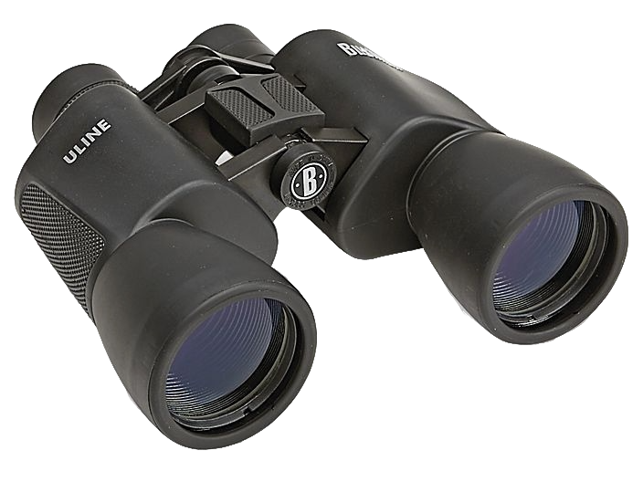
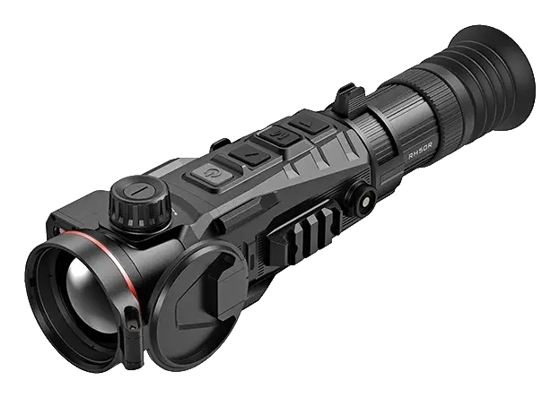

Оптические приборы
Классическая оптика для наблюдения за объектами на любых дистанциях. Высокое качество линз и надежность в любых условиях.

Монокуляры
Компактные и легкие приборы для наблюдения одним глазом. Идеально подходят для походов и путешествий, так как занимают минимум места. Обеспечивают яркую и контрастную картинку даже в сумерках.
Бинокли
Классические приборы для объемного наблюдения двумя глазами. Мы производим полевые и морские модели с влагозащитным корпусом и просветленной оптикой. Позволяют долго рассматривать удаленные объекты без усталости глаз.


Зрительные трубки
Мощные оптические приборы для детального изучения удаленных объектов (например, для наблюдения за природой или спортивных мероприятий). Оснащаются штативными креплениями для максимальной стабильности.
Оптика специального назначения
© ЗАО «Завод Юпитер»
Наверх ↑